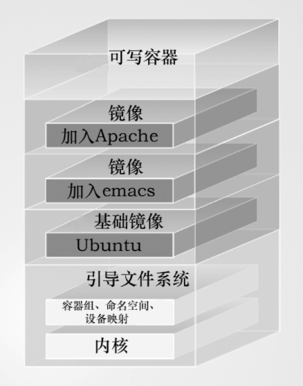
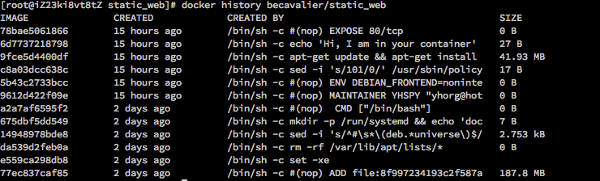
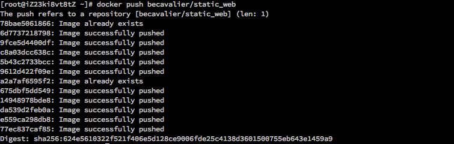

Docker 基础记录（一）
Docker 改变了人们日常从开发到部署的工作流方式。不仅如此，Dokcer 在云计算、大数据处理甚至深度学习基础系统架构等方面都有其用武之地和独到之处。Docker 出现的一个重要应用场景就是可以方便地加强开发环境与部署环境的一致性。
1、新的开发部署流程：
- 开发；
- 提交 GIT；
- 触发 Hook CI/CD；
- 构建 Docker 进行测试；
- 推送至私有 Registry；
- 运维部署 Dokcer 镜像上线；
2、操作系统级虚拟化：
Docker 是操作系统级虚拟化，不同于“管理程序虚拟化（Hypervisor Virtualization, HV）”，它运行在操作系统内核之上的用户态空间中，可以使多个独立用户空间运行在同一台主机上。
3、CentOS/Ubuntu 安装 Docker：
uname -a # 查看当前 Linux 内核版本；
sudo yum update # 升级包及系统内核（3.8以上）；
# 其他方式：
cd /etc/yum.repos.d
wget http://www.hop5.in/yum/el6/hop5.repo # 下载内核描述文件；
yum install kernel-ml-aufs kernel-ml-aufs-devel # 升级内核；
vi /etc/grub.conf # 修改 default=0 默认启动内核顺序；
reboot
# 检查 Device Mapeer；
grep device-mapper /proc/devices
ls -al /sys/class/misc | grep device-mapper
# 安装 Docker；
yum install docker-io
# 检查版本；
docker version
# 启动 Docker 服务；
service docker start
docker -d &
# 查看 Docker 状态（启动后才能查看）；
docker info
4、创建 Docker 容器：
docker help <command> # 查看对应 Docker 命里的帮助文档；
docker run --name jason_container -i -t ubuntu /bin/bash # 创建一个 Docker 容器（名字，支持 STDIN 和交互式 Shell，启动后打开容器内的 Bash Shell）；
docker run --name jason_container -i -t -d ubuntu /bin/bash # 创建一个长期运行的“守护式容器”；
docker ps -a # 查看所有 Docker 容器；
docker inspect <name/id> # 查看容器的详细配置信息；
docker rm -f <name/id> # 删除对应名称的 Docker 容器；
docker start <name/id> # 启动该对应名称的 Docker 容器；
docker restart <name/id> # 重新启动该对应名称的 Docker 容器；
docker attach <name/id> # 附着到正在运行的 Docker 容器上；
docker logs -ft <name/id> # 查看对应 Docker 容器上的日志信息；
docker top <name/id> # 查看对应 Docker 容器上的进程信息；
docker stats <name/id> <name/id> ... # 查看 Docker 容器的资源状态；
docker exec -d <name/id> <command>
docker stop <name/id> # 向容器发送 SIGTERM 信号；
docker kill <name/id> # 向容器发送 SIGKILL 信号；
5、Docker 镜像：
docker images # 列出所有可用的 Docker 镜像（/var/lib/docker）；
docker pull <image> # 拉取镜像；
docker search <image> # 在 Docker Hub 上查找公共镜像；
docker login # 登陆 Docker Hub （/root/.docker/config.json）；
docker logout # 登出 Docker Hub；
docker commit -m "<messages>" -a "<author>" <name/id> <repository> # 提交镜像；
docker tag <name/id> <repository>:<tag> # 为镜像标记 Tag；
# docker tag nginx repo/static:nginx # 为本地的 nginx 镜像打一个仓库为 repo/static 标记为 nginx 的 Tag；
docker push <repository>:<tag> # 提交对应 Tag 的镜像；
# docker push repo/static # 推送本地所有标记了仓库为 repo/static 的镜像（含多个 Tag）；
# docker push repo/static:nginx # 推送本地标记了仓库为 repo/static 的同时标签为 nginx 的镜像；
docker rmi <name/id> # 删除本地的 Docker 镜像；
6、使用 Dockerfile 来创建镜像：

每条 docker run 指令都会创建一个新的镜像层，并进行提交。整个镜像从基础镜像开始向上叠加形成一个镜像栈的结构。整个 Dockerfile 会在构建时传递给 Docker Deamon 守护进程，守护进程会负责整个 Docker 镜像的构建过程。
# Version: 0.0.1
FROM ubuntu:14.04
MAINTAINER YHSPY 'yhorg@hotmail.com'
ENV REFRESHED_AT 2017-11-05
ENV DEBIAN_FRONTEND noninteractive
RUN apt-get -qq update
RUN apt-get update && apt-get install -y nginx
RUN echo 'Hi, I am from your docker container' > /usr/share/nginx/html/index.html
CMD ["bin/bash"] # Docker 运行时执行的参数；
# ENTRYPOINT ["/usr/sbin/nginx", "-g", "deamon off,"] # 默认的 ENTRYPOINT 是 /bin/sh -c；
# WORKDIR /opt/webapp # 切换当前工作目录(不能使用～)；
# USER <user> # 设置用户组；
# ADD 会自动解压源文件；
# COPY 只负责复制和粘贴；
# LABEL
# ARG
# STOPSIGNAL
# ONBUILD
EXPOSE 80
开始镜像的构建流程。
docker build -t <repository> <path> # 依据 Dockerfile 来编译 Docker 镜像；
docker history <repository> # 查看 Docker 镜像的构建历史；
通过下图可以看到，在 Docker 守护进程构建镜像的过程中，针对每一次操作（对文件系统的改变）都会进行一次提交，并且生成一个对应的“镜像层”。同样在向 Docker Hub 推送镜像时，也是分别依次推送该镜像对应的每个“镜像层”。


docker port <name/id> <port> # 查看某个容器的端口映射（映射只在容器启动时才会生效或分配）；